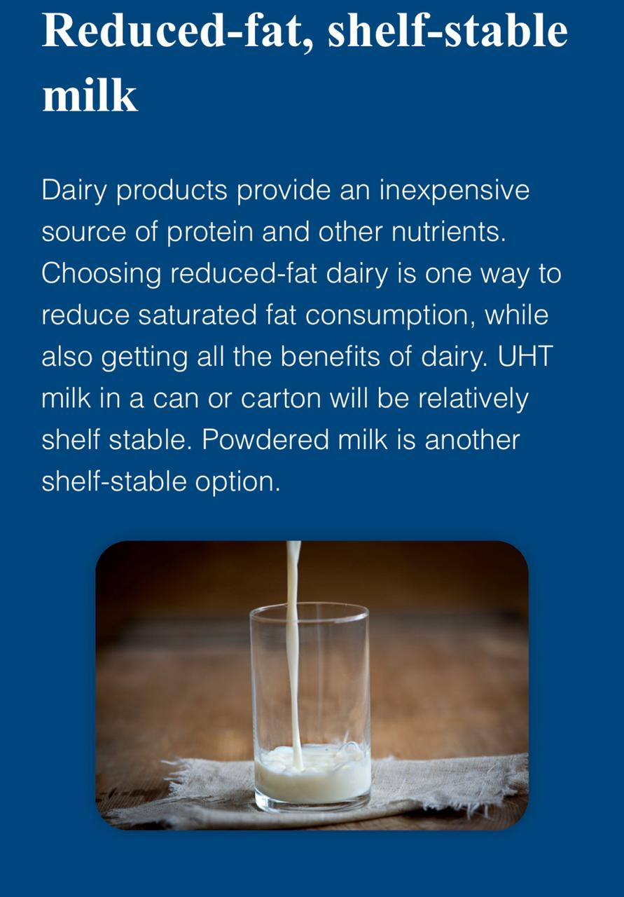

WHAT IS COVID ?
SYMPTOMS
DIAGNOSIS
HOME ISOLATION
DIET
PULSE OXIMETER
EXERCISES
FACTS AND MYTHS
VACCINES
DIET



•Include beans, lentils & pulses as these are good sources of protein
•Include fresh fruits & vegetables (Bright coloured fruits & vegetables like red capsicum, carrots, beetroot &greens etc)
•Drink 8-10 Glasses of water and Hydrate yourself.
•Water helps to flush out toxins.
•Citrus fruits like lemons & oranges are a good source of Vit C which is key in improving immunity levels & to fight off infections.
•Include spices like ginger, garlic & turmeric which are natural immunity boosters.
•Eat home cooked food. Use low fat and less oil for cooking food.
•Wash fruits & vegetables before use.
•Include Low fat milk & yogurt as they are good sources of protein &calcium.
•Avoid eating maida, fried &junk food (chips, cookies etc).
•Avoid sugary or packed juices & carbonated drinks as these are very low in nutrients.
•Avoid eating cheese, coconut & palm oil, butter as they are unsaturated fats and are unhealthy
•Include lean animal protein like skinless chicken, fish &egg whites.
•Avoid mutton, liver, fried & processed meats.
•Limit Non Veg intake to 2-3 times per week.
•Limit intake of whole eggs to once a week.
VEG DIET IN HOME ISOLATION
•Eat whole grains such as brown rice, whole wheat flour, oats, millets, etc.•Include beans, lentils & pulses as these are good sources of protein
•Include fresh fruits & vegetables (Bright coloured fruits & vegetables like red capsicum, carrots, beetroot &greens etc)
•Drink 8-10 Glasses of water and Hydrate yourself.
•Water helps to flush out toxins.
•Citrus fruits like lemons & oranges are a good source of Vit C which is key in improving immunity levels & to fight off infections.
•Include spices like ginger, garlic & turmeric which are natural immunity boosters.
•Eat home cooked food. Use low fat and less oil for cooking food.
•Wash fruits & vegetables before use.
•Include Low fat milk & yogurt as they are good sources of protein &calcium.
•Avoid eating maida, fried &junk food (chips, cookies etc).
•Avoid sugary or packed juices & carbonated drinks as these are very low in nutrients.
•Avoid eating cheese, coconut & palm oil, butter as they are unsaturated fats and are unhealthy
NON-VEG DIET IN HOME ISOLATION
•Store non veg items separately from fresh products.•Include lean animal protein like skinless chicken, fish &egg whites.
•Avoid mutton, liver, fried & processed meats.
•Limit Non Veg intake to 2-3 times per week.
•Limit intake of whole eggs to once a week.